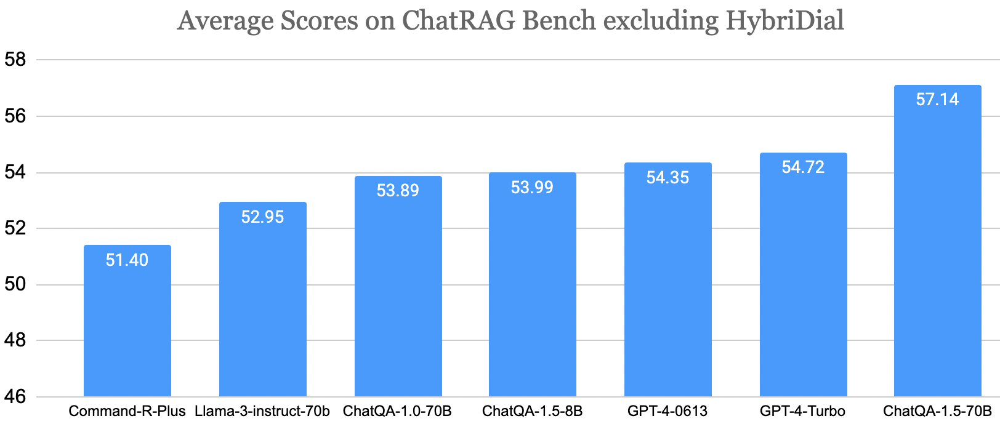
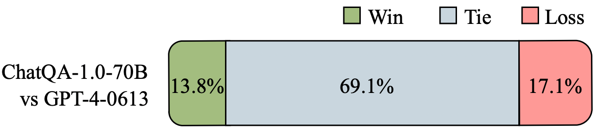

Today (May 3rd, 2024), we release ChatQA-1.5, which excels at conversational question answering (QA) and retrieval-augmented generation (RAG). ChatQA-1.5 is developed using an improved training recipe from ChatQA paper, and it is built on the top of the Llama-3 base model. Specifically, we incorporate more conversational QA data to enhance its tabular and arithmetic calculation capability. ChatQA-1.5 has two variants: Llama3-ChatQA-1.5-8B and Llama3-ChatQA-1.5-70B. We share the model weights, evaluation data, training data, and SFT recipe for future study.
ChatRAG Bench
We release ChatRAG Bench: a benchmark for evaluating a model's conversational QA capability over documents or retrieved context.
ChatRAG Bench consisting of 10 datasets: Doc2Dial, QuAC, QReCC, TopioCQA, INSCIT, CoQA, HybriDialogue, DoQA, SQA, ConvFinQA.
ChatRAG Bench covers a wide range of documents and question types, which require models to generate responses from long context, comprehend and reason over tables, conduct arithmetic calculations, and indicate when questions cannot be found within the context.
Superior Accuracy on RAG and Conversational QA

We use the same (retrieved) context as inputs for all the LLMs for a fair comparison. ChatQA-1.5 models use training samples from the HybriDial dataset. Hence, we compare average scores (e.g., Unigram F1) excluding HybriDial for the fair comparison. Compared to GPT-4-0613 and GPT-4-Turbo-2024-04-09, Llama3-ChatQA-1.5-8B achieves comparable results, and Llama3-ChatQA-1.5-70B greatly outperforms both of them.
Evaluation of Unanswerable Scenario
ChatRAG Bench also includes evaluations for the unanswerable scenario, where we evaluate models' capability to determine whether the answer to the question can be found within the given context. Equipping models with such capability can substantially decrease the likelihood of hallucination.
Command-R-Plus
Llama-3-instruct-70b
GPT-4-0613
GPT-4-Turbo
ChatQA-1.0-70B
ChatQA-1.5-8B
ChatQA-1.5-70B
Average
68.11
76.42
80.73
80.47
77.25
75.57
71.86
We use QuAC and DoQA datasets which have such unanswerable cases to evaluate such capability. We use both answerable and unanswerable samples for this evaluation. Specifically, for unanswerable case, we consider the model indicating that the question cannot be answered as correct, and as for answerable cases, we consider the model not indicating the question is unanswerable as correct (i.e., the model giving an answer). In the end, we calculate the average accuracy score of unanswerable and answerable cases as the final metric.
Other Evaluations
Evaluation on Single-Turn QA and RAG Benchmark
Zero-shot exact match scores on Natural Questions (NQ), TriviaQA, and HotpotQA.
We further evaluate Llama3-ChatQA-1.5 models on knowledge-intensive single-turn QA datasets: Natural Questions (NQ), TriviaQA, and HotpotQA from the KILT Benchmark, and compare them against frontier RAG models. We use the Dragon retriever to obtain the most relevant contexts and perform a one-time retrieval for all datasets. We find that, despite its significantly smaller model size, Llama3-ChatQA-1.5-8B performs better than RA-DIT (65B). Llama3-ChatQA-1.5-70B remarkably outperforms existing frontier RAG models.
Human Evaluations

In this human evaluation, we randomly select 60 samples from each of 10 datasets on ChatRAG Bench, and each sample is labelled by three annotators, which results in a total of 1800 annotations. We ask annotators to verify the facts in models' outputs and determine which model provides a more accurate response to the question. From the results, ChatQA-1.0-70B and GPT-4 are tie most of the time, and GPT-4 achieves slightly higher win rate.
@article{liu2024chatqa,
title={ChatQA: Surpassing GPT-4 on Conversational QA and RAG},
author={Liu, Zihan and Ping, Wei and Roy, Rajarshi and Xu, Peng and Lee, Chankyu and Shoeybi, Mohammad and Catanzaro, Bryan},
journal={arXiv preprint arXiv:2401.10225},
year={2024}}